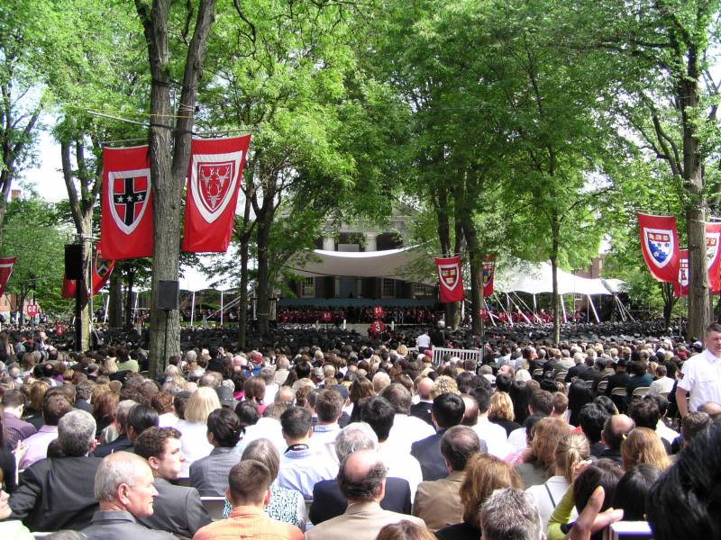
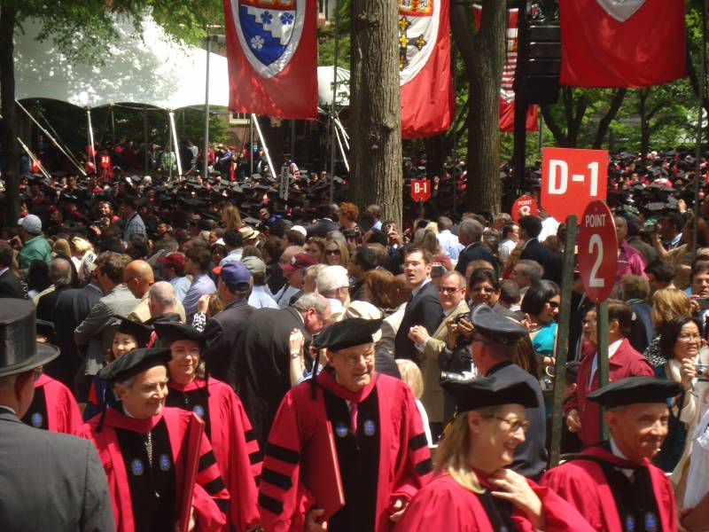
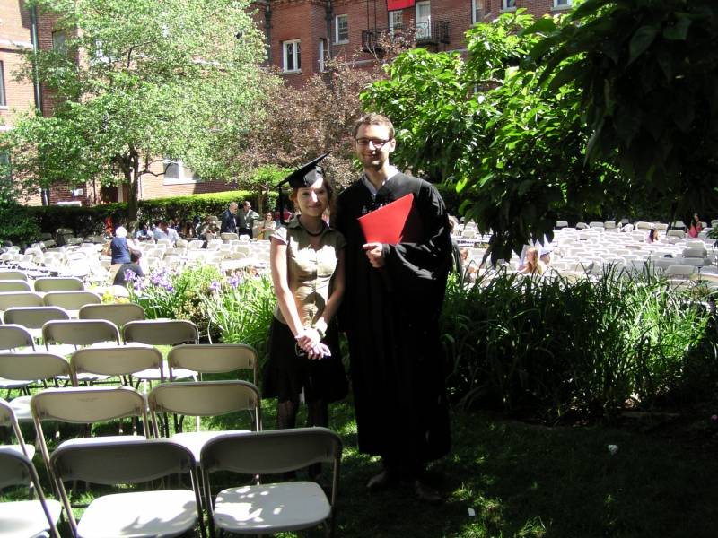

Fanfáry troubí a vlajky vlají !!! Dnes nadešel ten slavný den, den rozdávání diplomů a vrcholné představení celé promoce. Musíme si na tu slávu přivstat - brány kampusu jsou do třičtvrtě na 7 zavřené a bez lístku se do areálu nedá dostat. Za branami hlídají sekuriťáci a prohlížejí kabelky…ráno jsme se nemohli vyhrabat z postele, takže jdeme jako obvykle pozdě :D. V souladu s Murphyho zákony si zrovna dneska, na nejdůležitější ceremonii, mamka doma zapomene brýle do dálky, bez kterých samozřejmě nemá šanci z celé promoce něco mít. Taťka se pro ně obětavě vrací, ale co čert nechtěl, náš úžasný privát opět nezklame - dveře od bytu se mu zaseknou a na spícího Seana se nemůže dobouchat - podle scénáře naší dovolené by se fakt dala psát tragikomedie :D…zatímco se naši vydají zpátky na Broadway, já hlídám místa, abysme viděli na velkou obrazovku, na které se bude vysílat dění na pódiu, a užívám si atmosféru americké promoce, která mi tak trochu připomíná závěr filmu Pomáda - minimálně co se týče hudby linoucí se z reproduktorů :D.

Davové šílenství - to jsou americké promoce :)
V devět hodin zazní pochod a začíná slavnostní průvod - to už jsou naštěstí naši i s brýlema zpátky. Protlačím se davem hrdých rodičů s fotoaparáty za nějakýma aktivníma Japoncema až téměř k zátarasám, kde hlídá nabušený sekuriťák, takže mám všecko z první ruky. Krom zástupu studentů v talárech, rozdělených do skupinek podle jednotlivých kolejí, v průvodu prochází i významné osobnosti Harvardu. Vyfotím si pěkně zblízka prezidentku univerzity - Drew Faust - a pár neznámých xichtů, které vypadají na VIP :D…Ačkoliv celá ta sláva může vyznít tak trochu přehnaně a nabubřele, nemůžu se ubránit nadšení; je to opravdu zážitek účastnit se něčeho tak velkolepého. Lukova kolej přichází před pódium zrovna z opačné strany, než na které číhám, takže nikoho ze známých v davu studentů nezahlídnu.
O hodinu a půl později šerif státu Massachussets zahajuje promoci a vzápětí už začíná hrát americká hymna. Jestli vedle vás stojí Američan, bezpečně to poznáte, protože opravdu hlasitě a hrdě zpívají. Po hymně a úvodní modlitbě zpívá univerzitní sbor - koneckonců celá ceremonie je proložena jeho výstupy a krom poměrně známého “For the splendor of creation” zazní například také hymna Harvardu. I dnes se v programu najde chvilka pro několik studentských proslovů, ale naštěstí netrvají dlouho a záhy si bere slovo Drew Faustová začíná se s udílením titulů. Nejdřív přichází na řadu doktoři a magistři, přičemž každý obor je představován děkanem příslušné fakulty za mohutného aplausu jeho studentů. Ti mají krom povinných talárů také vtipné rekvizity, kterými dávají najevo, že patří k sobě. Právníci mají soudcovská kladívka, studenti veřejné správy modré glóbusy a zubaři atrapu “veliké huby”, jak to později komentuje Luk :D…No a pak už konečně přichází na řadu ta nejpočetnější skupina, na kterou se nejvíc těšíme a která taky dělá největší bugr (rozuměj aplaus :D). Drew Faustová jim pogratuluje k bakalářským titulům a my myslíme, že už to je tedy pro dnešek všecko, ale s udělováním titulů přecejen ještě není konec…nazávěr promocí univerzita uděluje několik čestných doktorátů. Krom významných chemiků, matematiků a dalších vědců je mezi kandidáty na čestný titul nominována také osoba, kterou pozná i našinec - herečka Meryl Streep :) !!!!! Její jméno jsem sice zahlédla v univerzitních novinách, kterýma jsem listovala při čekání na rodiče, ale kde by mě napadlo…:D. Tak se teda s tatím opět pokusíme prodrat až k Widenerově knihovně, kde čekáme na konec ceremonie a závěrečný průvod, ve kterém se mi Meryl, čerstvou Doctor of Arts, podaří alespoň trochu slušně vyfotit. Díkybohu, protože jinak by mi to doma asi nikdo nevěřil :D !!!

Meryl Streep, Doctor of Arts ;)
To už máme nejvyšší čas přemístit se do Lukovy koleje, kde se bude odehrávat předávání diplomů. Je pravé poledne a já už se zas začínám opíkat do červena 8-)…Podaří se nám ulovit slušná místa i sklenici vody, takže jsme spokojení a poslední významný obřad může začít. Prostředí kolejního dvorku je komornější a i profesorské proslovy méně formální. Po tradičním udělování několika cen se přistoupí k samotnému rozdávání diplomů. Jede se podle abecedy, takže si prvních dvacet minut můžeme dát klidně voraz, nicméně já už vytahuju foťák a rozcvičuju se na bráchových spolubydlících - Thomasovi a Danielovi, jejichž příjmení se nachází v první polovině abecedy. Nakonec se ale dočkáme i my a hlavně brácha, zaaplaudujeme, cvaknou fotoaparáty a jsme rádi, že to máme konečně všecko za sebou :D !
Už s diplomem v kapse se celí hladoví po této náročné ceremonii ženeme do kolejní jídelny na slavnostní oběd. Nacpeme se krocanem, těstovinama, salátem, ovocem a zmrzlinou s logem univerzity :D a jdeme splnit ještě poslední (příjemnou) společenskou povinnost - rodinné foto s absolventem a diplomem :-).

S čerstvým absolventem
Vrátíme se zpátky do krásné rozkvetlé zahrady, kam za námi příjde Ján, čehož hned využijeme a povýšíme ho do role vrchního fotografa :-). Pak ještě pózuju já s Lukem a škemrám na něm jeho absolventskou čepičku :D a nakonec Luk s Jánem (toho pro holky doma zkrátka musím zvěčnit :D…). Pak už se s námi rozloučí, protože je objednaný k holiči, a naše famílie zamíří zpátky do yardu, kde má ještě řečnit naposledy Drew a soudce Nejvyššího soudu. Protestuju, protože jsem celá spálená a už mám těch keců plné zuby, a vehementně prosazuju výlet do Bostonu :D…
Navečer se nicméně pohojí i mně a mému přání je vyhověno. V šest si dáme sraz s bráchou u metra a vyrážíme konečně do víru velkoměsta - to celebrate, jak pravím před odchodem zvědavému Seanovi :-D !!! Bostonské metro je vpodstatě taková šalina :D, před Bostonem totiž vyjíždí z podzemí a pokračuje přes most, takže se nám naskytne nádherný pohled na podvečerní Charles river a panorama s mrakodrapy. Jsem unešená :-)…a když vylezeme z metra, moje nadšení je ještě větší. Město je plné zeleně. Než se dostaneme na největší nákupní třídu, kterou mi chce Luk ukázat, projdeme dvěma krásnými velikými parky, které vedou až k nábřeží. Procházka po nákupní třídě je docela vyčerpávající, přecejen už jsem dneska na nohou od šesti hodin, a tak Lukovo povídání, do kterých restaurací se dá zajít na dobré jídlo, už skoro nevnímám. Proto to brzo zakempíme v jedné příjemné kavárničce na ledovém čaji. Když vylezeme odpočatí ven, jsem překvapená, jak se zvedá od moře vítr a začíná poměrně nepříjemně vyfukovat. Brašule s krátkým rukávem je docela otužilec, já se chumlám do svetru a hned ještě pohotově vytahuju palestinu. To už je ale čas vrátit se zpátky metrem domů - jezdí tady totiž jen do půlnoci, takže jsme na tom přecejen s brněnskou městskou hromadnou líp :D. Boston si mě každopádně získal na první pohled a hned zítra hodlám pokračovat v jeho prozkoumávání :-)…
Fotky Meryl, Jána a Luka v taláru sem!